Overview
Eleven maps of real ground, 99 plant sets built by hand, more than 60 million plants placed by script, one switch for the seasons and a sky full of volcanic ash. This is how the world of KnightZ was built in two weeks with Claude, Blender and Unreal Engine 5.
Episode 4 covers the environment pipeline from the ground up: real elevation data turned into game terrain, rules for how big a map should feel on foot, plans that place every tree and building, rivers that flow, trees and plants modelled in Blender instead of bought, a season system that drives every leaf, and a custom sky. Each step lists the tools, the numbers and the mistakes that cost time.
Episode plan
| # | Segment | What it shows |
|---|---|---|
| 1 | Cold open | One woodland view turning through spring, summer, autumn and winter |
| 2 | Real ground | Elevation data and rivers turned into 2017 x 2017 heightmaps |
| 3 | How big is a map? | Crossing time, true-size story sites and squeezed empty land |
| 4 | Plans before props | Placement plans, gray box and biomes |
| 5 | Water | One continuous river surface and the ford |
| 6 | Trees from Blender | Why the bought packs went, and how a tree is built |
| 7 | Shrubs, climbers and 54 ground plants | Four seasons on one texture sheet |
| 8 | Five million plants | The environment test map and the density rules |
| 9 | One plant list per region | Core, minor and exclusive sets |
| 10 | The season switch | Grass height and autumn colour groups |
| 11 | The ash sky | Two cloud layers, sun cover, lightning and a red moon |
| 12 | Streaming and performance | World Partition grids and draw distances |
| 13 | Lessons and what's next | Six mistakes and the next episode |
Software and tools
| Tool | Role in this episode |
|---|---|
| Claude (desktop app) | Planning, every script, review of every capture, project docs as memory between sessions |
| Claude skills | /newtree builds a tree species from a reference folder; plant and shrub procedures saved as docs |
| Blender 5.2 with Blender MCP | Trees, shrubs, climbers, 54 ground plants, water mesh, impostor and wind bakes |
| Unreal Engine 5.8 with Unreal MCP | Landscapes, World Partition, foliage placement, materials, sky system in C++ |
| Python | Heightmaps, placement plans, biome maps, density maps and the season switch |
| Copernicus GLO-30 | 30 m surface elevation data for the real terrain |
| OpenStreetMap | Rivers, brooks and lakes (ODbL) |
| Pivot Painter 2 | Per-branch wind on the trees |
| Git with LFS | Every map and asset committed from the editor |
Real ground from elevation data
The game is set in western Britain in AD 548, so the land is real. Each region map starts from a window cut out of satellite elevation data around the real place.
1Get the elevation
Copernicus GLO-30 is a free 30 m surface model of the world. It is a surface model, so it includes trees and buildings. A grey-scale opening with a 90 m kernel strips them off and leaves the ground.
2Add the water
Rivers, brooks and lakes come from OpenStreetMap. Modern water is removed: canals, reservoirs, fish pools and park lakes. River banks are regraded with runoff gullies so the water sits in a believable channel.
3Write the heightmap
Each map becomes a 2017 x 2017 pixel, 16-bit heightmap with masks for forest, field, meadow, moor, marsh, road, river, ruin and rock, plus a metadata file with the exact scale for Unreal. Building pads are flattened into the ground where the manor and other sites stand.
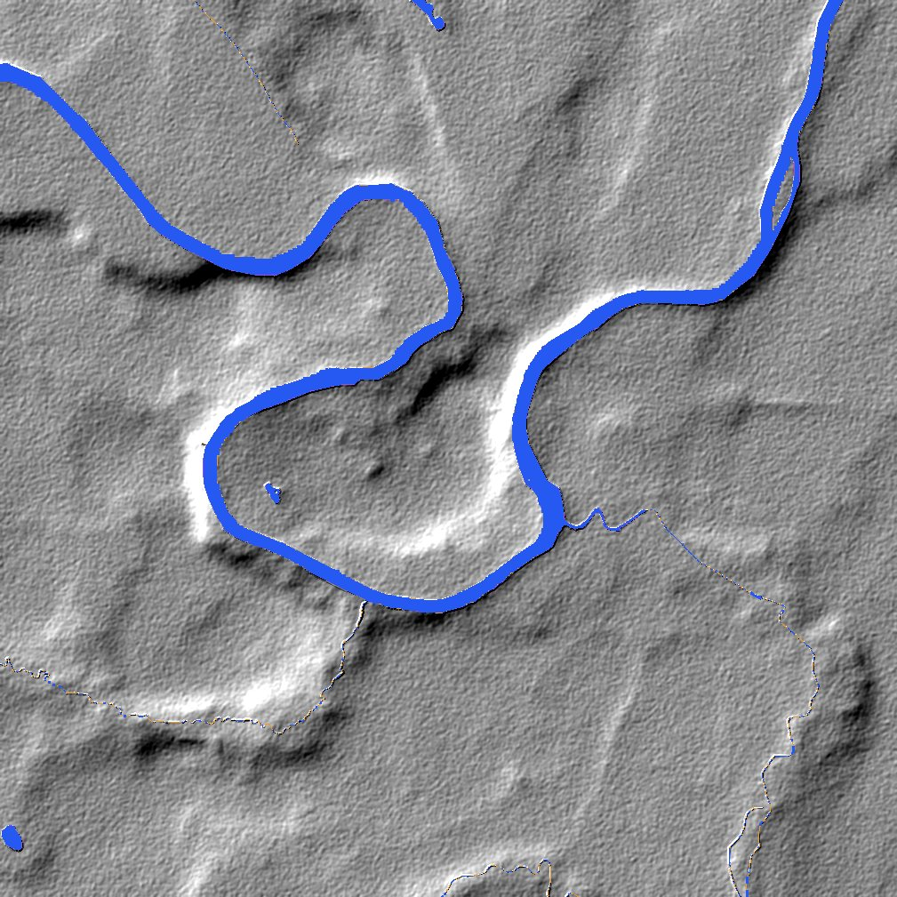
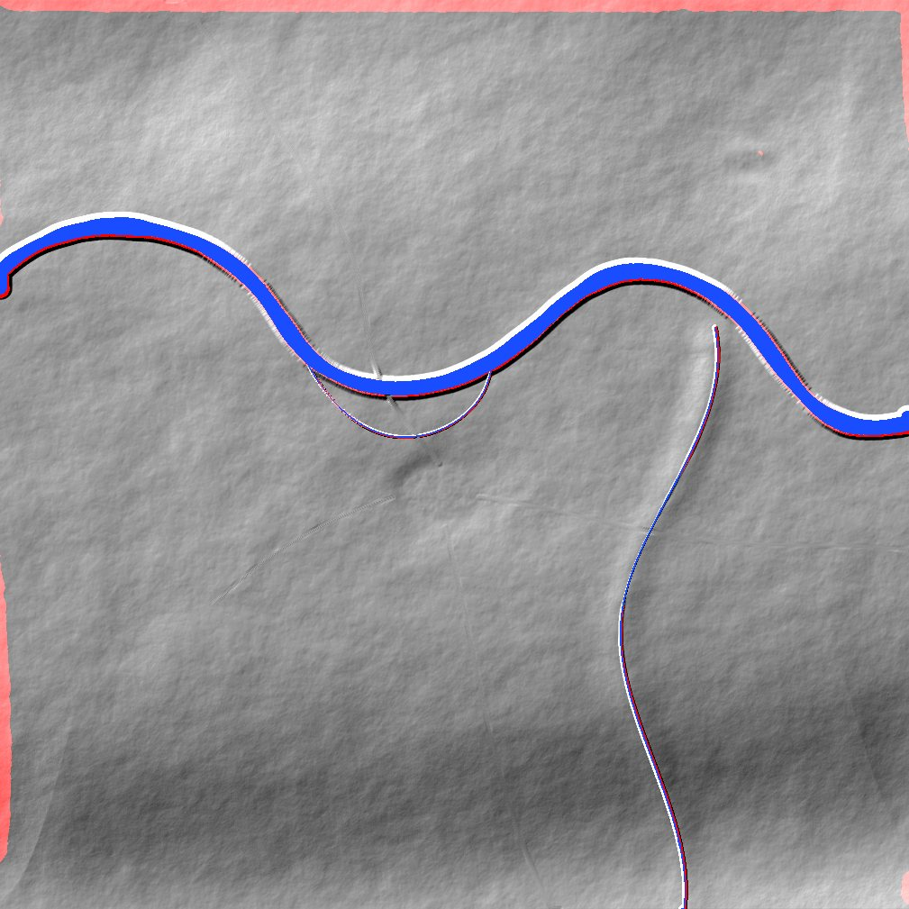
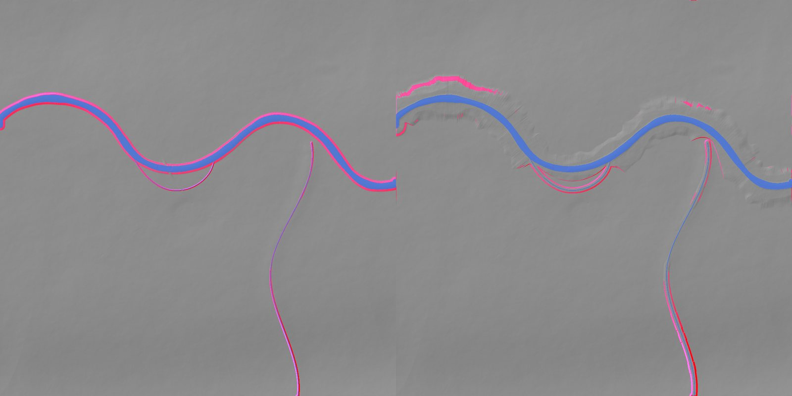
| Map | Ground range in game | Real reference |
|---|---|---|
| M03 The Wrekin | 103 to 396 m | Summit 407 m |
| M04 Wenlock Edge | 96 to 276 m | Edge top about 280 m |
| M06 The Long Mynd | 221 to 512 m | Pole Bank 516 m |
| M07 The Stiperstones | 247 to 523 m | Manstone Rock 536 m |
| M10 The Clee Hills | 183 to 532 m | Abdon Burf 540 m |
| M11 Salinae | 26 to 59 m | River about 30 m, hill about 55 m |
How big should a map feel?
A real valley takes a long time to cross on foot. The rules below were settled in one design session and applied to every map.
- Measure in time. Crossing a map at a 5 m/s jog should take 10 to 15 minutes.
- True size by default. Only empty land (moor, bog, deep wood, long field runs) can be squeezed, and never more than 2x.
- Places stay true size. The manor, buildings, towns, ruins and fords sit in keep zones that are copied 1:1. Buildings are moved, never scaled.
- Height is never compressed. Squeezed land gets steeper, so slopes over 33 degrees outside keep zones are smoothed (30 passes).
- Density target. Something worth stopping for every 1 to 2 minutes of walking.
- The simulation keeps real acres. The fields you see are a sample of real-size strips; the manor's books use the true total.
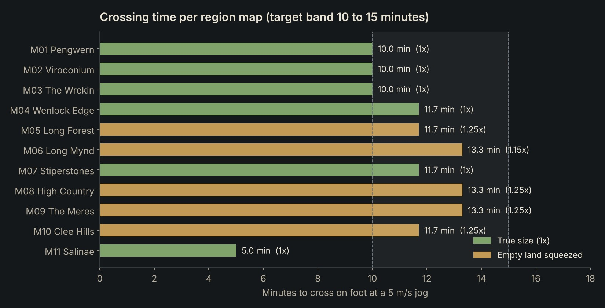
The warp is separable and monotone, so rivers stay continuous. Every later tool converts real coordinates to game coordinates through the same warp table stored with the map.
Scope: rebuild M02 to M10, build M11 Salinae new. Elevation: same source and method as M01 (bank regrade with runoff gullies, building pads). Scale: compress per the map scale procedure. Keep zones 1:1, height never scaled, slopes capped. Foliage: M01 density, our own plants only, per the plant allocation by map. Clearings: building footprint + 8 m with no trees, shrubs or tall plants; short grass allowed from 2 m outside the walls.
Why it worked: every rule pointed at a saved project doc, so nothing had to be explained twice, and the clearing rule was a number, not a description.
Plans before props
Nothing is placed by hand. A Python planner per map reads authored zones (the manor, fields, coppice, ford, ruins) and writes rule rasters at 1 m. Trees, props and buildings are then scattered with Poisson spacing so nothing overlaps and nothing lines up.
- The hub gray box: 49,259 placeholder props in 74 sets, so scale and walking time could be tested before any art existed.
- The coppice wood near the manor is managed the period way: six panels cut on rotation under oak standards.
- Every building pad is cleared for its footprint plus 8 m.
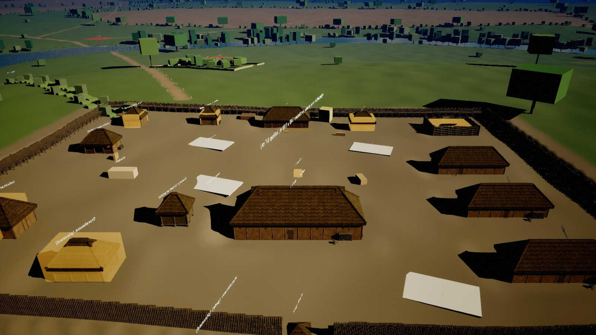
Biomes
Each map is split into biomes from the plan masks and the terrain: slope, height above the nearest water, altitude over 250 m, building footprints and scene zones. Edges are softened with noise so one biome bleeds into the next.
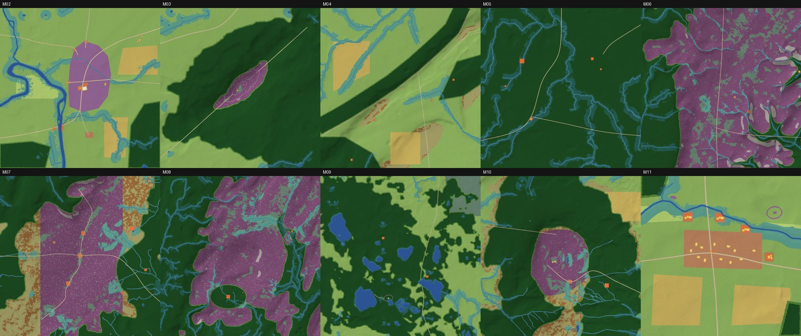
| Map | Main biomes |
|---|---|
| M05 The Long Forest | Woodland 80%, wet woodland along the brooks 16% |
| M06 The Long Mynd | Heather and bilberry moor 58%, batch woods 20%, bog and flush 8%, rock and scree 4% |
| M09 The Meres | Mere-country woods and carr 56%, pasture 25%, water 6%, bog 3% |
| M11 Salinae | Pasture 54%, strip fields 17%, town 11%, wet grassland 7% |
Water that flows
The Severn, the mill leat and the brook share one continuous water mesh built in Blender: 9 tiles, 119,000 triangles, with the flow direction baked into the mesh. The material moves the surface downstream, lightens it in the shallows and fades it at the banks.
- The Severn is about 3 m deep.
- The ford is 50 cm deep, so it can be waded.

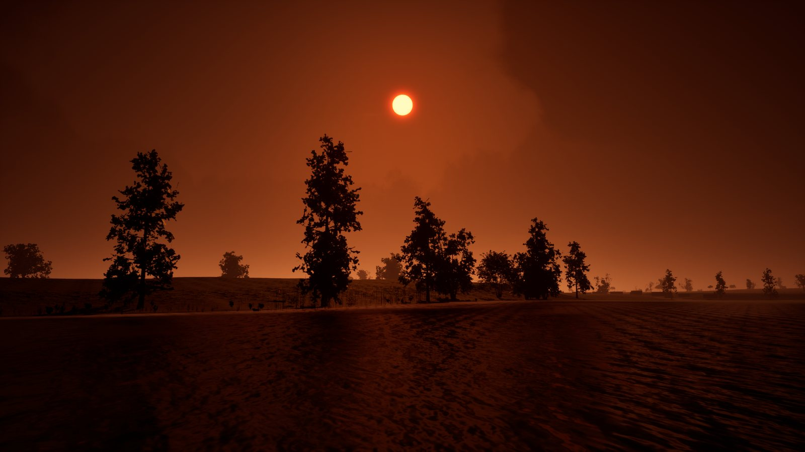
Trees built in Blender
The first plan was to buy foliage. An audit of the bought packs changed that: most did not match the period or the region, some had no textures, and the clean-up removed 2,911 packages and 13 GB. New rule: only fully textured packs are kept, and every plant in the game is built for KnightZ.
1Grow a skeleton
A Python script grows each tree in four levels: trunk, limbs, branches and branchlets, with twigs and leaf cards riding on the last level. Rules per species set the shape: a tall leader for ash, a cone for alder, a dense tangle for hawthorn.
2Bark and leaf cards
Bark is tiled with species detail. Leaves are cards cut from a leaf sheet with opacity, roughness and translucency packed into one mask.
3Wind
Pivot Painter 2 stores a pivot and a direction for every branch, so wind moves the trunk, limbs, branches and twigs separately.
4Far trees
Impostors: the tree is rendered from 144 directions (12 x 12) into a 2048 atlas. Past a set distance the mesh is swapped for one flat card that shows the right view.
5Seasons and budget
Each species has mature, young and old forms and spring, summer, autumn and winter states. Young oaks keep their brown leaves through winter, as real ones do. Full detail is capped at 5,000 triangles.
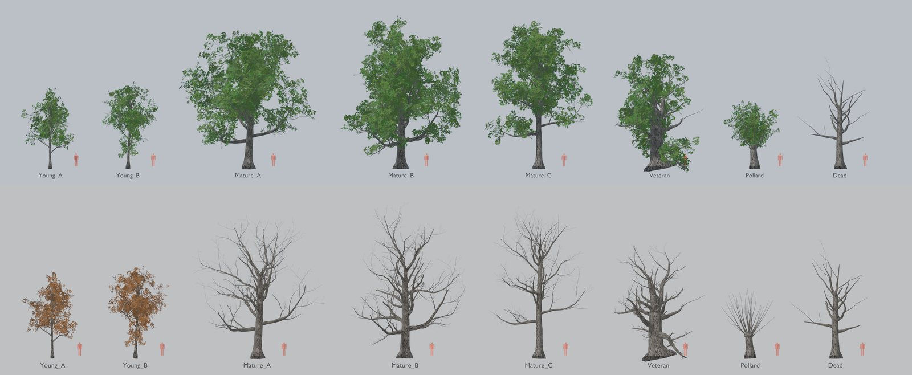
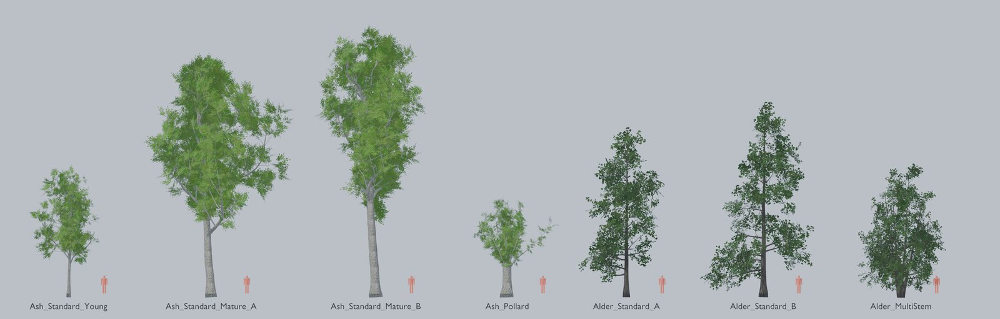
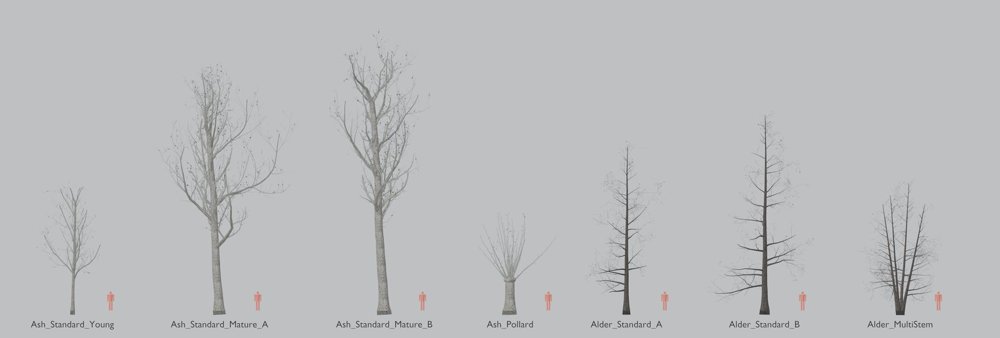
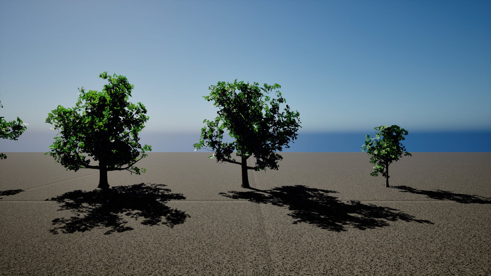
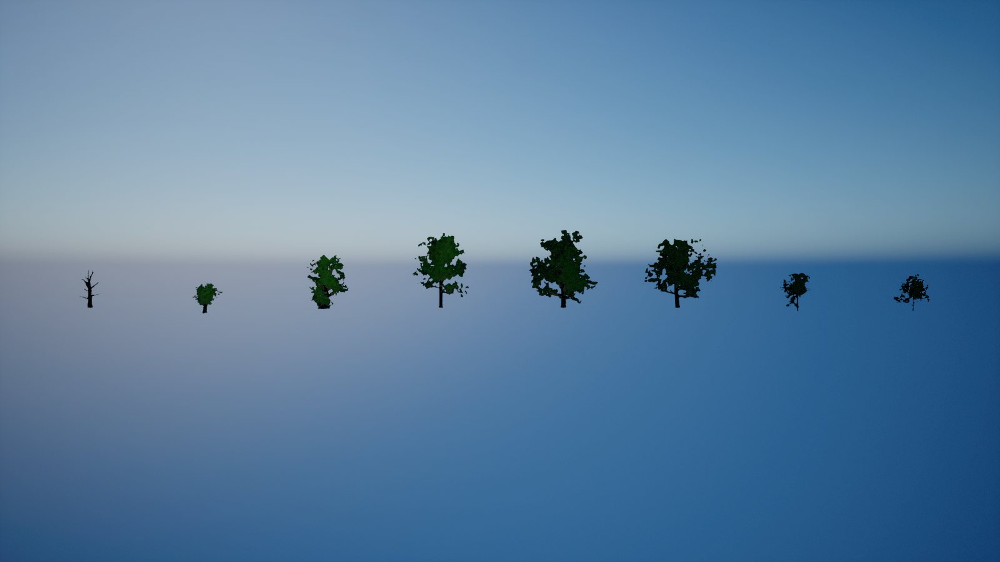
/newtree "Rowan reference folder"
Why it matters: after the oak, every species was a one-line prompt. 21 species and 66 meshes exist now.
The full species list with every step is on the Trees checklist.
Shrubs, understory and climbers
Below the canopy sit 11 shrubs (hazel coppice, hawthorn and blackthorn thickets, holly, elder, osier willow, dog rose, dogwood, spindle, guelder rose and juniper), 4 understory plants (bracken, bramble, heather and bilberry) and 2 climber kits.
The ivy kit has mats, caps, edges, hangs and stems for ruined Roman walls. The honeysuckle kit has twines, loops, sprays and hangs. Both are also baked onto host trees, split by species so each region gets its own: birch on the Wrekin, wych elm on Wenlock Edge, lime in the Long Forest, alder in the Meres and ash on the Clee Hills.
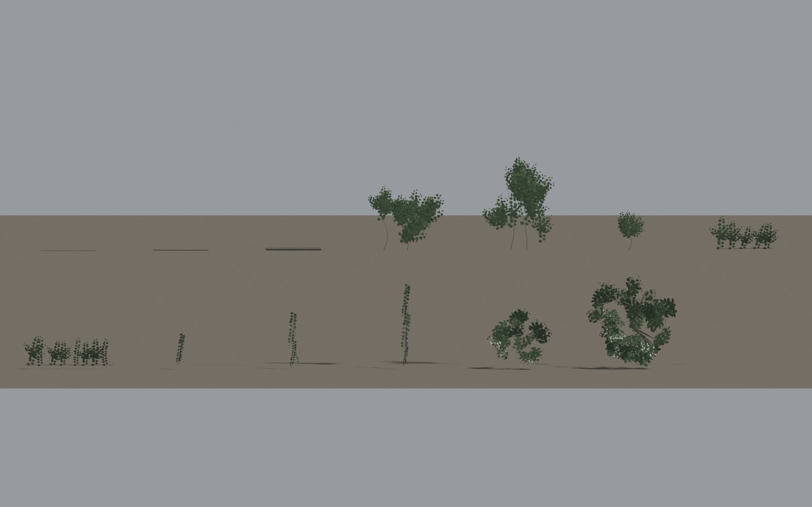
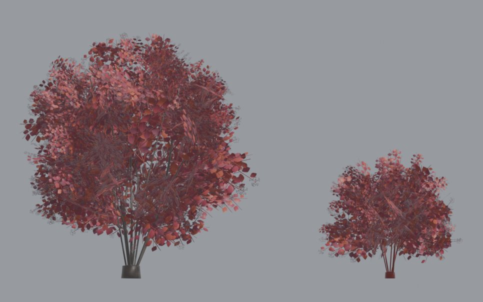
54 ground plants, four seasons on one sheet
The ground layer has 54 plants: woodland flowers, ferns, mosses, fungi and litter; grasses and meadow herbs; reeds, sedges and bog plants; and the crops of the manor (spelt, six-row barley, oats, rye, peas, field beans, flax, leeks, onions, garlic, brassicas and orchard fruit). Each is under 1,000 triangles.
One texture sheet, four seasons
Every plant's texture sheet is split into four quarters: spring top-left, summer top-right, autumn bottom-left, winter bottom-right. The material shifts the texture coordinates by half a sheet to pick the season, so a season change costs nothing at run time and needs no second mesh.
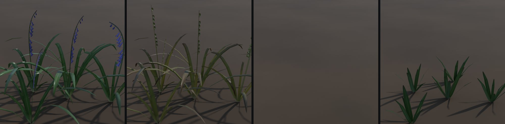
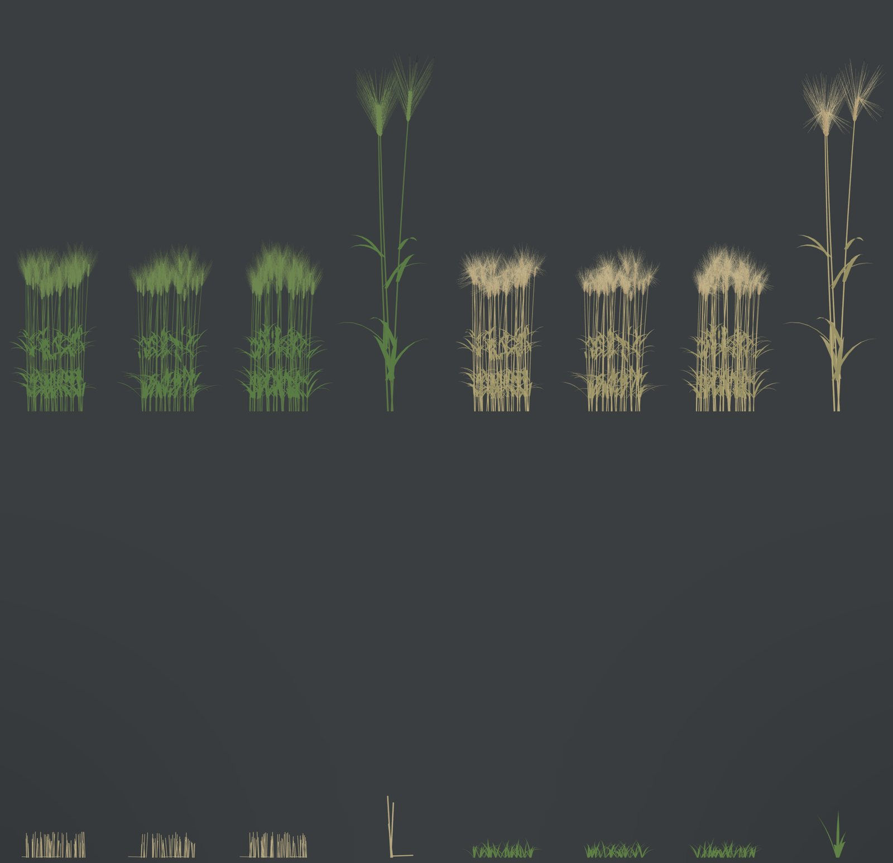
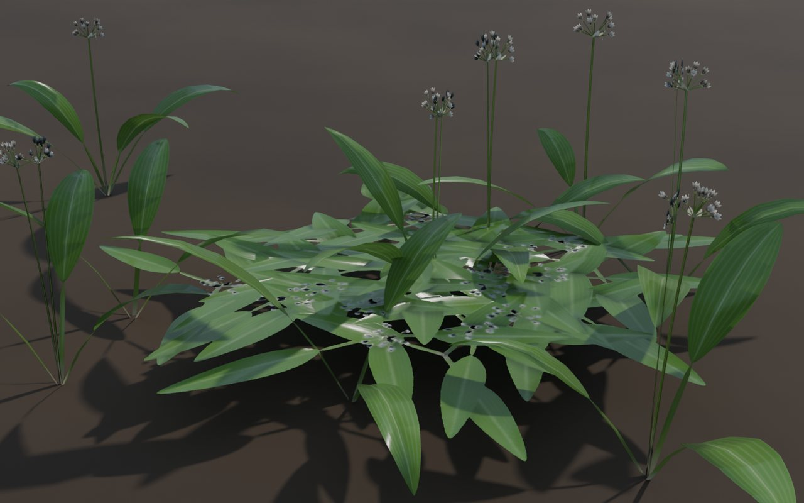
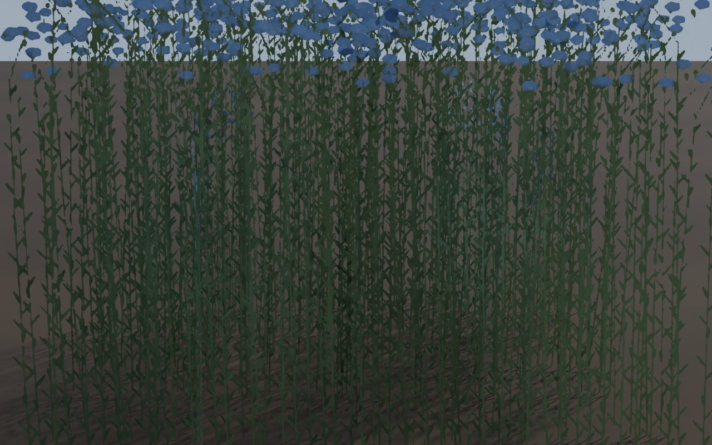
All 54 with their regions are on the Ground Plants checklist.
Five million plants on a test map
The hub was copied to an environment test map, 3 km by 3 km, so ground cover could be tuned without touching the real map. The ash sky was swapped for plain white light there so plant colours could be judged on their own.
- 10 biomes from the existing masks: grazed pasture, woodland interior, wood edge, hay meadow, wet grassland, river bank, fallow, two crop fields and the manor gardens.
- 44 plant layers, each with its own meshes, spacing, scale and random seed.
- Density = biome weight x clump noise (8 to 45 m) x broad noise (160 m). That gives drifts, thin grazed patches and carpets of one flower.
- 5,244,259 plants, grouped into one batch per mesh per 256 m cell.
| Plant size | Draw distance |
|---|---|
| Litter and moss | 30 to 60 m |
| Short herbs | 60 to 110 m |
| Tall herbs and tussocks | 140 to 200 m |
| Reeds | 320 m |
| Crops | 650 m |
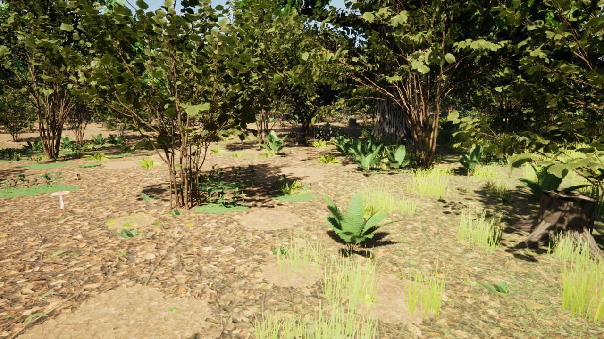
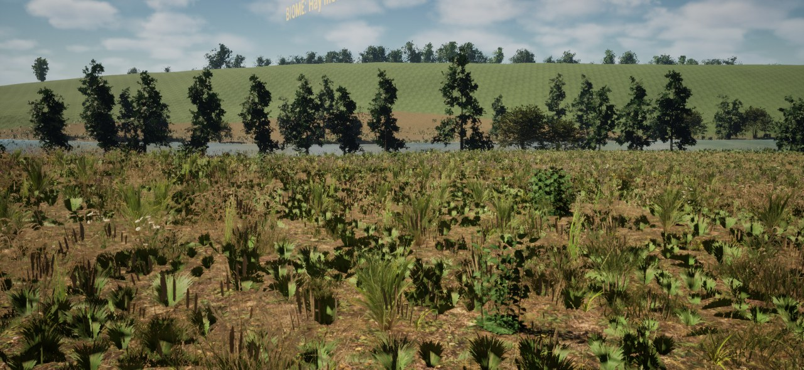
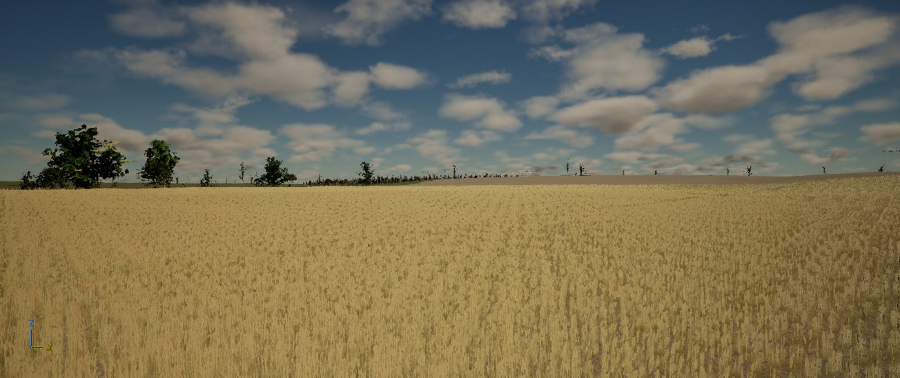
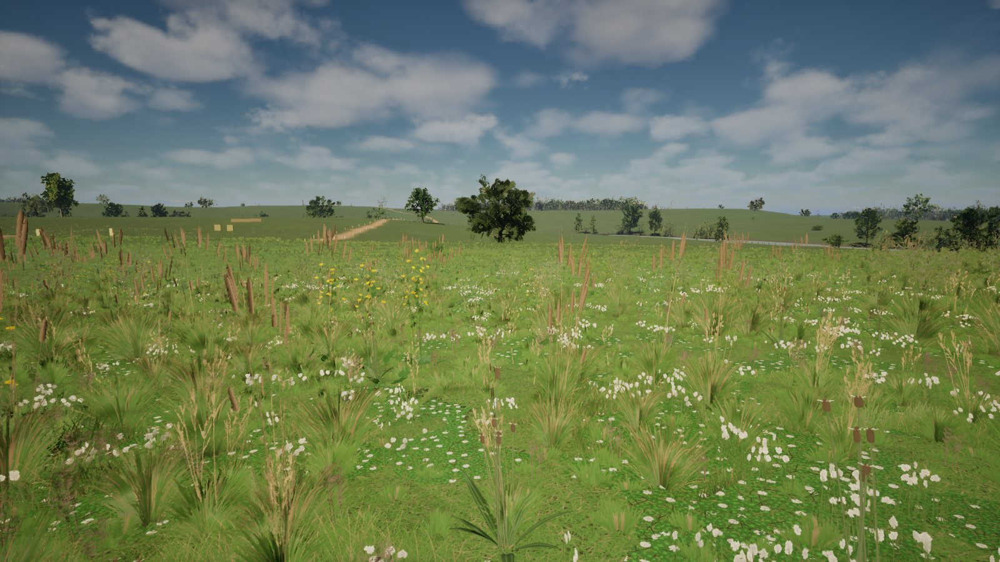
After the owner approved the test map, the same planting was rebuilt on the real hub: 5,559,591 plant instances, 33,681 trees and shrubs and 249,300 crop tiles.
One plant list per region
All 99 plant sets were assigned to the 11 maps by real habitat. Core sets are the dominant or signature plants of a map; minor sets appear at low weight. Every map has at least one set of its own, so each place looks different on the ground.
| Map | Plants found only here |
|---|---|
| M01 Pengwern (the manor) | Orchard apple and pear, spelt, barley, peas, field beans, flax |
| M02 Viroconium | Feral plum from Roman gardens, elder scrub, ivy on ruined walls |
| M04 Wenlock Edge | Wych elm, dogwood, spindle |
| M05 The Long Forest | Small-leaved lime, wild cherry, honeysuckle, holly understory |
| M06 The Long Mynd | Juniper |
| M07 The Stiperstones | Reindeer lichen |
| M08 The High Country | Rowan |
| M09 The Meres | Alder and willow carr |
| M11 Salinae | Ash pollards, guelder rose |
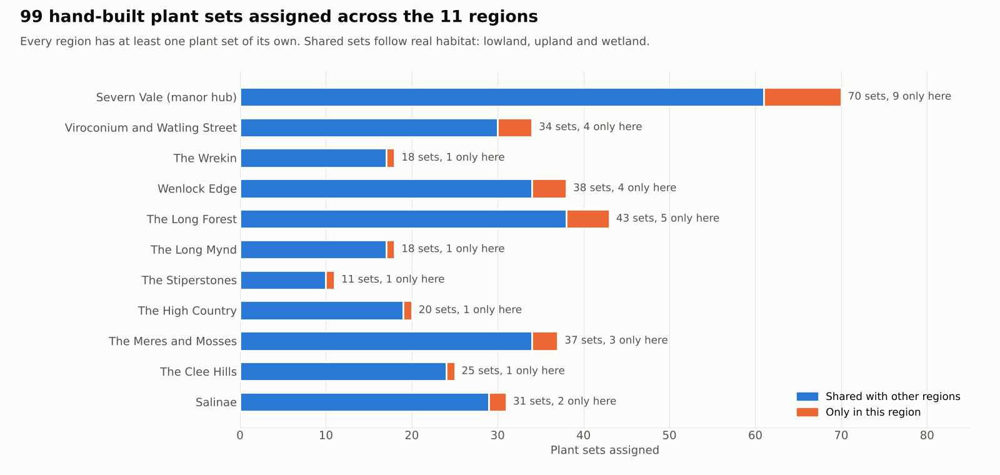
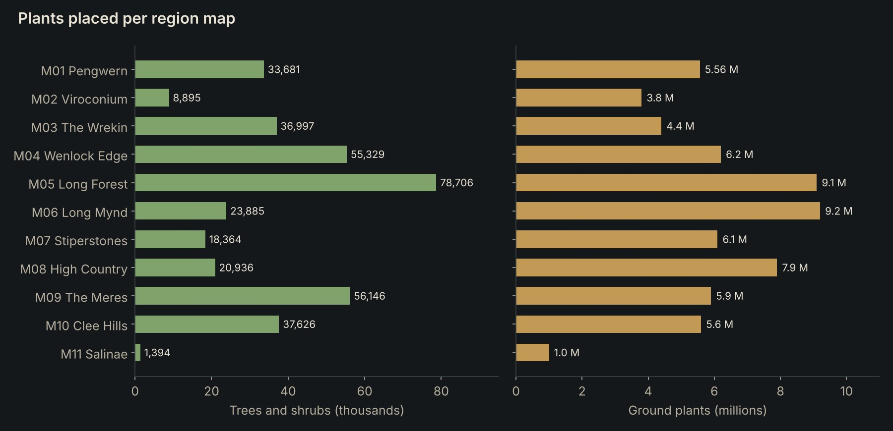
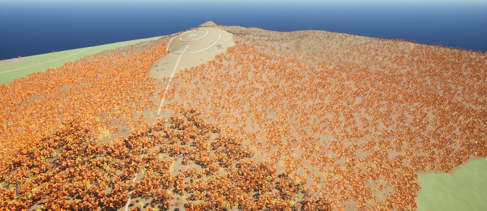
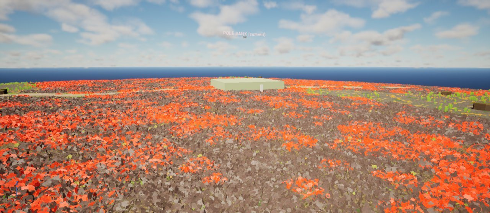
The season switch
One call sets the season for the whole project: set_season('autumn'). It drives the plant material parameters, the older tree materials and the day of the year for the sun.
| Season | Sheet quarter | Grass height | Leaves | Sun day |
|---|---|---|---|---|
| Spring | Top left | Half | Fresh green | 120 |
| Summer | Top right | Full | Full growth | 196 |
| Autumn | Bottom left | Full | Colour by species | 303 |
| Winter | Bottom right | Full, dead | Broadleaf trees bare | 15 |
| Autumn group | Species |
|---|---|
| Red | Hawthorn, blackthorn, bramble, dog rose, wild cherry, rowan, dogwood, spindle, guelder rose, crab apple, bilberry |
| Orange | Field maple, apple, pear, plum, both oaks |
| Rust | Bracken |
| Gold | Ash, birch, hazel, willow, lime, wych elm, elder, alder |
| Stays green | Holly, yew, juniper, heather, moss, clover |

The volcanic ash sky
Twelve winters after the sun went grey, the light comes through ash. The brief for the sky was short:
Black volcanic ash clouds. Lightning every 20 to 30 minutes, not constant. Thin high cloud always over the sun so it glows red. Now and then a heavy black cloud covers the sun: darker, but never black, always a red glow. A dim red moon at night.
Why it worked: every line is something you can see and check in a screenshot.
| Part | Setting |
|---|---|
| Heavy ash layer | 1.5 to 5.3 km, drifting coverage |
| High veil | 8.5 to 10 km, always present, keeps the sun red |
| Gap toward the sun | Heavy ash thins along the sightline, wider at low sun |
| Sun cover | A heavy cell every 6 to 14 minutes for about 150 s; light floor 30 percent |
| Lightning | Every 20 to 30 minutes, 1 to 3 strokes, 3 to 12 km away |
| Thunder | Delayed by distance at 343 m/s |
| Day | 48 minutes, red moon at night |


Streaming and performance
Every map is a World Partition level. Content is split into grids that load at different distances, so the player only holds what is near.
| Grid | Cell size | Loading range |
|---|---|---|
| Terrain | 512 m | 6 km |
| Trees | 256 m | 700 m |
| Buildings | 256 m | 600 m |
| Detail | 128 m | 300 m |
| Ground cover | 256 m | 200 m |
- Distant trees switch to a hierarchical level of detail with impostor cards.
- Grass and small clutter fade at 50 to 80 m; shrubs at 150 to 300 m.
- First standalone measurement at the hub's north gate: about 6.7 ms per frame (about 150 fps) with about 570,000 plant and prop instances in range, before the five-million-plant pass.
- The ten new maps hold about 8.8 GB of streamed actor files between them.
Lessons
| # | Mistake | Fix |
|---|---|---|
| 1 | Bought foliage that did not fit the period | Build every plant for the game; keep only fully textured packs |
| 2 | Trees placed with collision on landed on other trees | Place with collision off, switch it on after |
| 3 | A re-run left the first ground-cover pass behind | World Partition only deletes loaded actors: load the folder first |
| 4 | Grass kept spawning old meshes | Recompile and save the terrain material, then flush the grass cache |
| 5 | Console commands during a level load crashed the editor | Never run them from Python while a map is loading |
| 6 | Summits 4 to 14 m low | The tree-stripping filter trims narrow tops; restore pass planned |
What's next
- Autumn colours for the older oak, ash and alder canopies.
- Summit restore on the ten new maps and a far-view build for each.
- Replace the placeholder blocks with finished buildings and scene sets (see the Buildings checklist).
- Playtest each map for crossing time and points of interest.
Episode talking points
Show the talking points
Cold openSame woodland, four seasons, one switch. Every plant here was built for this game in Blender. Here's how the world came together.
Real groundSatellite elevation, trees stripped off, real rivers cut in. Eleven maps of real Shropshire, each a 2017 pixel heightmap.
ScaleReal land is slow to cross. Rule: 10 to 15 minutes at a jog, story places true size, only empty land squeezed, height never squeezed.
PlansNothing placed by hand. Zones, 1 m rules and Poisson spacing; gray box first, 49,259 placeholders on the hub.
WaterOne continuous river mesh with the flow baked in. Severn 3 m deep, ford 50 cm.
TreesBought packs out: 13 GB deleted. Skeleton, cards, Pivot Painter wind, impostors, seasons, 5,000 triangles. Then /newtree for the other 20 species.
Ground plants54 plants, four seasons on one sheet, under 1,000 triangles each.
Five millionTest map, 10 biomes, 44 layers, density from noise. Five million plants, then onto the real hub.
Regions99 sets, each map with plants of its own. 60 million plus across all maps.
SeasonsOne call. Grass height, colour groups, the sun's day. The floating trees bug.
SkyThe brief in four lines. Two cloud layers, sun cover, lightning, red moon. Two crashes and their fixes.
PerformanceWorld Partition grids, draw distances, 6.7 ms at the gate.
WrapSix lessons, the RoadMap page, next episode.